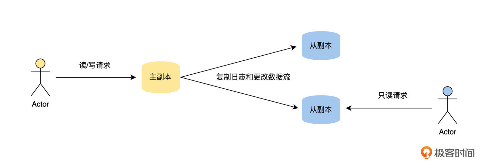
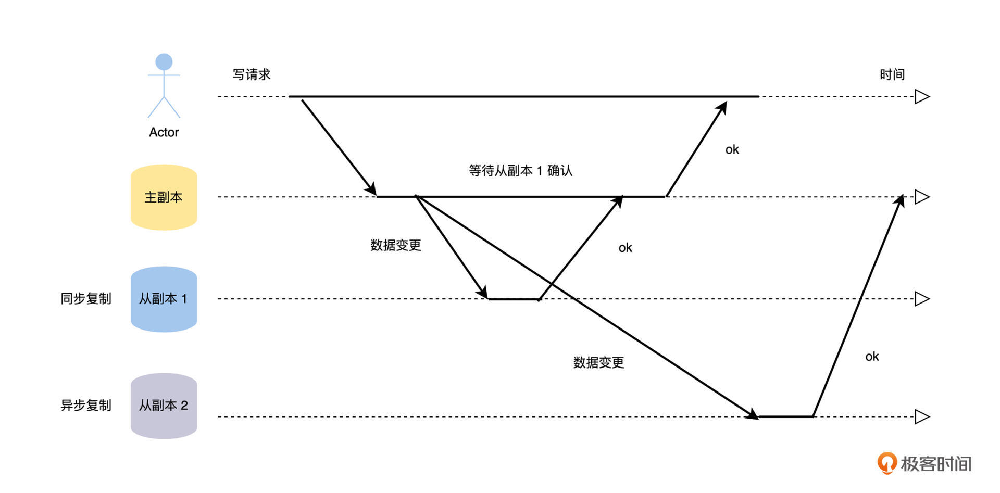
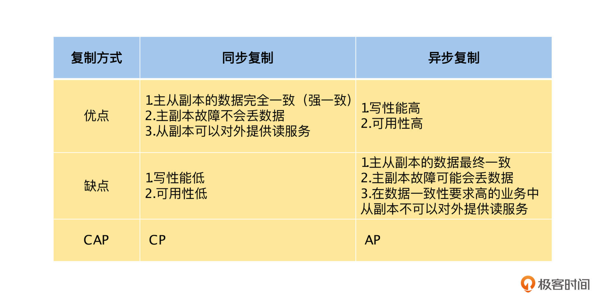
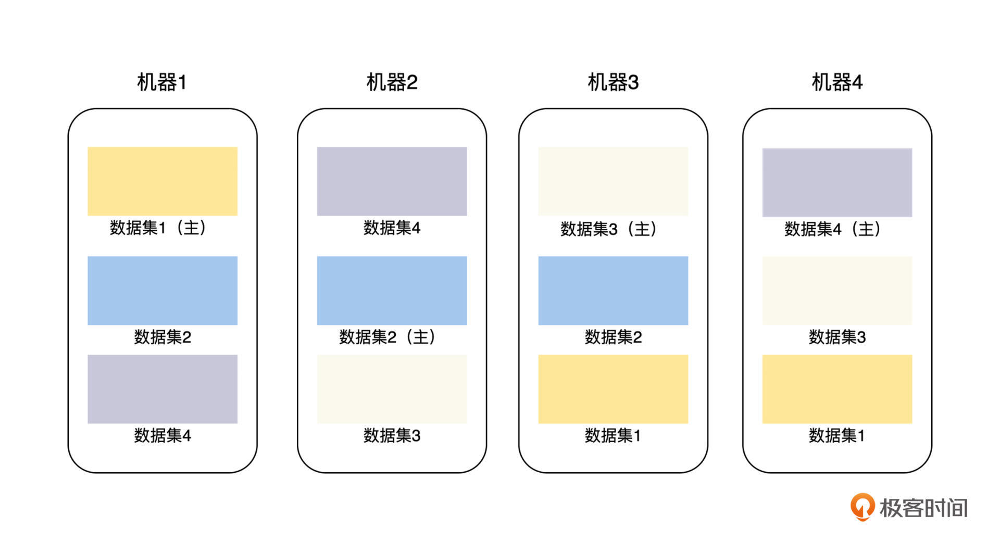

- 00 开篇词 掌握好学习路径，分布式系统原来如此简单.md.html
- 01 导读：以前因后果为脉络，串起网状知识体系.md.html
- 02 新的挑战：分布式系统是银弹吗？我看未必！.md.html
- 03 CAP 理论：分布式场景下我们真的只能三选二吗？.md.html
- 04 注册发现： AP 系统和 CP 系统哪个更合适？.md.html
- 05 负载均衡：从状态的角度重新思考负载均衡.md.html
- 06 配置中心：如何确保配置的强一致性呢？.md.html
- 07 分布式锁：所有的分布式锁都是错误的？.md.html
- 08 重试幂等：让程序 Exactly-once 很难吗？.md.html
- 09 雪崩（一）：熔断，让故障自适应地恢复.md.html
- 10 雪崩（二）：限流，抛弃超过设计容量的请求.md.html
- 11 雪崩（三）：降级，无奈的丢车保帅之举.md.html
- 12 雪崩（四）：扩容，没有用钱解决不了的问题.md.html
- 13 可观测性（一）：如何监控一个复杂的分布式系统？.md.html
- 14 可观测性（二）：如何设计一个高效的告警系统？.md.html
- 15 故障（一）：预案管理竟然能让被动故障自动恢复？.md.html
- 16 故障（二）：变更管理，解决主动故障的高效思维方式.md.html
- 17 分片（一）：如何选择最适合的水平分片方式？.md.html
- 18 分片（二）：垂直分片和混合分片的 trade-off.md.html
- 19 复制（一）：主从复制从副本的数据可以读吗？.md.html
- 20 复制（二）：多主复制的多主副本同时修改了怎么办？.md.html
- 21 复制（三）：最早的数据复制方式竟然是无主复制？.md.html
- 22 事务（一）：一致性，事务的集大成者.md.html
- 23 事务（二）：原子性，对应用层提供的完美抽象.md.html
- 24 事务（三）：隔离性，正确与性能之间权衡的艺术.md.html
- 25 事务（四）：持久性，吃一碗粉就付一碗粉的钱.md.html
- 26 一致性与共识（一）：数据一致性都有哪些级别？.md.html
- 27 一致性与共识（二）：它们是鸡生蛋还是蛋生鸡？.md.html
- 28 一致性与共识（三）：共识与事务之间道不明的关系.md.html
- 29 分布式计算技术的发展史：从单进程服务到 Service Mesh.md.html
- 30 分布式存储技术的发展史：从 ACID 到 NewSQL.md.html
- 春节加餐 技术债如房贷，是否借贷怎样取舍？.md.html
- 春节加餐 深入聊一聊计算机系统的时间.md.html
- 春节加餐 系统性思维，高效学习和工作的利器.md.html
- 结束语 在分布式技术的大潮流中自由冲浪吧！.md.html
- 捐赠
19 复制（一）：主从复制从副本的数据可以读吗？
你好，我是陈现麟。
通过学习“分片”的内容，我们使用分片技术，让数据按一定的策略分布到多台机器上，解决了极客时间用户量快速增长，导致存储或处理的用户数据量超过单台机器限制的问题。
但是，我们还不能高兴得太早，如果现在有一台提供数据服务的机器，由于宕机、网络不通等原因不可用了，那这一台机器上的所有数据分片就都不能被访问，这对于极客时间要求 7 * 24 小时提供服务的系统来说是不能接受的，而这就是我们工作中经常会涉及的高可用问题的场景。
那么从这节课开始，我们将一起花三节课的时间来解决这个问题。这一节课，我们先讨论让存储服务高可用的思路，接着讨论具体的解决方法，即数据复制的三种方案，最后学习第一种主从复制的基本原理，另外两种数据复制的方案在后面的两节课程中我们再来讨论。
如何让存储服务高可用
通过分析上文提到的场景，我们可以迅速锁定这是存储服务高可用的问题，解决高可用问题通常有两个思路：
第一种思路是避免故障出现。我们通过深入细节，一个一个去消除可能导致故障的原因，从而避免故障的出现，比如停电会导致宕机，那么我们就增加备用电源。但是这样，我们会遇到两个无法确定的问题：
- 我们可能无法穷尽所有的可能性，如果一个意料之外的问题出现了，故障就会发生。
- 我们虽然知道某些故障的原因，但是无法控制，比如机房会因为海啸、台风等自然不可抗力原因而宕机，在一定成本范围内，我们没有好的办法来防范。
而第二种思路则恰恰相反，接受故障随时可能出现的事实，通过冗余的方法让系统在故障发生时，也能够正常提供服务。这也正是第 15 讲“被动故障恢复”中，通过多预案冗余来解决问题的思路。其实，只要我们能够接受提供的冗余机器和人力成本，那么冗余就是值得优先考虑的方案。
数据复制的三种方案
通过上述的思考和讨论，本课开头提出的极客时间存储服务的高可用问题，就变成了下面两个子问题：
1. 我们有没有办法让提供数据服务的机器永远可用？- 2. 我们将每一份数据都复制到多台机器上，让它们都能提供相关的数据服务，这个成本我们能接受吗？
对于目前的计算机系统来说，第 1 个子问题的答案显然是否定的。
而第 2 个子问题的解决其实也非常困难，虽然我们能接受数据复制的成本，但是这个成本真的非常大。首先，数据复制导致的相关硬件成本是成倍增长的。其次，由于数据是持续变化的，导致复制操作不能一次完成，我们必须持续将这些变化复制到它所有的节点上，这就给分布式存储带来一个非常大的麻烦：在数据复制的过程中，由于节点可用性和网络中断等各种原因，可能会导致不同节点的数据不完全相同，这就是数据的一致性问题。
数据一致性问题是伴随整个分布式存储发展的技术与理论，它是分布式存储的核心问题，在后面“一致性与共识”的课程中会有深入的介绍。
虽然数据复制的成本和复杂度非常大，但是为了让存储服务高可用，我们也别无选择。下面我们先介绍一下数据复制的一些基本概念。
对于一个数据集来说，每个保持完整数据集的节点我们称为副本。如果一个副本接受外部客户端的写请求，并且这个副本在新数据写入本地存储后，通过复制日志和更改流将新数据发送给所有的副本，那么我们就将接受写请求的副本称为主副本，其他的副本称为从副本，从副本可以接受读请求。
于是，基于是否有主副本，有一个还是多个主副本，我们可以将数据复制的方案分为以下三种：
- 主从复制：整个系统中只有一个主副本，其他的都为从副本。
- 多主复制：系统中存在多个主副本，客户端将写请求发送给其中的一个主副本，该主副本负责将数据变更发送到其他所有的主副本。
- 无主复制：系统中不存在主副本，每一个副本都能接受客户端的写请求，接受写请求的副本不会将数据变更同步到其他的副本。
主从复制的工作流程
这节课我们先来了解主从复制，主从复制就像是一个主人带一堆的仆从，主人能接收外面的信息，仆从不能接触外面的信息，主人在接收到外面的信息后，按照一定的策略将外面的信息完整分享给仆从们。
主从复制是我们工作中最常见、最容易理解的复制方案，比如我们接触最频繁的缓存系统 Redis、关系数据库 MySQL 和 PostgreSQL、非关系数据库 MongoDB 和消息队列 Kafka 都内置支持主从复制，它的工作流程如下图。

关键选择：同步复制 OR 异步复制
主从复制的工作流程，主要就是将变更数据从主副本复制到从副本，但是这里有一个非常关键的选择：主副本在接受外部客户端的写请求，将新数据写入本地存储后，是同步等待从副本也将新数据写入本地存储后，才回复客户端写入成功，即同步复制；还是立即向客户端回复写入成功，即异步复制呢？具体的过程如下图。

我们可以从图中看到，主副本在处理写请求的时候，会等待配置同步复制的从副本 1 确认成功后，才返回客户端。而对于配置异步复制的从副本 2，主副本不会等待它的确认，就直接向客户端返回写入成功了。
这里我们来举一个例子，比如我在极客时间上更新了头像后，如果你立即去查看我的头像，那么可能会出现以下三种情况：
- 读主副本：你从主副本去读取我的头像，因为头像就是从这个副本写入的，所以你查询到的是我刚刚更新的头像。
- 读同步复制的从副本：你从从副本 1 去读取我的头像，因为头像的写入请求会同步等待这个从副本复制完成，所以你查询到的是我刚刚更新的头像。
- 读异步复制的从副本：你从从副本 2 去读取我的头像，因为头像的写入请求和这个从副本的复制操作是异步的，写入请求成功不能保证该副本数据复制完成，所以你有可能查询到我刚刚更新的头像，也有可能是上一次更新的头像。
了解完同步复制和异步复制的工作流程后，你可能觉得它们之间差别也不太大，只是在主副本处理客户端写请求时，是否等待从副本同步完成后再返回客户端。但是，这两种不同的复制方案却对系统可用性的设计有着非常大的影响。
如果我们选择同步复制，那么在数据更新的时候，主副本都需要等待从副本写入成功。正常情况下这个时间非常短，在 1 秒钟内就可以完成，但是由于主、从副本分别运行在不同的机器上，可能出现网络延迟、中断和机器故障的情况。因此数据从主副本复制到从副本的时延就变得不可预测，可能数秒或者数十秒，甚至写入失败。
例如，一个用户在更新头像时，如果一个从副本突然宕机，那主副本就会迟迟收不到这个从副本同步完成的通知。由于是同步复制，系统就不能向用户返回更新成功的提示，待等待超时后，只能提示用户头像更新失败，这样会非常影响系统可用性的设计。
但是它也有优点，由于所有的数据都是同步从主副本复制到从副本的，所以主、从副本都有最新的数据版本，它们都能对外提供读服务，并且数据都是正确的，即系统的数据是强一致性的。
如果我们选择异步复制，在数据更新的时候，主副本写入成功就会返回成功，不会同步等待从副本是否写入成功，数据变更后通过异步的方式进行复制。由于数据的更新操作不依赖从副本，所以不受网络和从副本机器故障的影响，写入性能和系统可用性会大大提高。
但是由于主、从副本间的数据变更不是同步复制的，所以从副本上的数据可能不是最新的版本，那么就会有两个问题。
首先，当主副本突然故障时，主副本上写入成功，但是还没有复制到从副本的变更就会丢失，这种情况在数据正确性要求高的场景里是不可以接受的。比如你在极客时间的 App 中充值了 100 元，充值请求就会将余额增加 100 元的变更写入主副本。在数据更新还未同步到所有从副本的时候，主副本突然宕机了，这个时候，我们会将其中的一个从副本切换为主副本，以便正常对外提供服务。
但是由于主、从副本间的数据变更不是同步复制的，现在所有的副本都没有收到余额增加 100 元的数据变更，那么你就会发现刚刚的 100 元已经花出去了，而余额中并没有增加 100 元，这个时候你一定会找客服投诉的。
其次，我们可能会通过从副本读到老版本的数据，在正确性要求高的场景下，就不能通过从副本来提供读服务了。在异步复制的场景中，如果要通过从副本读取数据，要么我们能接受旧版本的数据，要么我们在读数据的时候给定一个版本号，要求读取小于或者等于这个版本号最新的数据。然后处理读请求的从副本，通过等待或者主动向主副本同步数据的方式，确保本地数据的版本超过读请求的版本号后，再按要求返回数据。
从上面的讨论中，可以看到 CAP 理论的权衡，同步复制模式选择了 C ，而放弃了 A ，是 CP 模型；而异步复制模式选择了 A ，而放弃了 C ，是 AP 模型。为了让你更好地理解，我总结了同步复制和异步复制的优缺点，具体见下表：

通过这些讨论，你会发现同步复制和异步复制的优缺点都非常明显，所以我们很自然会想到混合的复制方式，比如有一个主副本，一个同步复制的从副本，其他都是异步复制的从副本。
这样如果主副本故障，由于有一个同步复制的从副本，所以不会出现数据丢失的严重问题，并且这个从副本也能提供数据完全一致的读服务。另外其他从副本可能会读到旧版本数据，但是由于只有一个同步复制的从副本，对系统的写性能和可用性的影响也相对较少。
主从复制的粒度更小一点
我们上面讨论的主从复制模型，是基于每一个副本都有全量的数据集的，如果我们将这个主从复制的粒度变小一点，比如可以指定每一个副本最大为 128 M，对于全量数据集按 128 M 拆分成多个副本，在每一个主从复制副本集内部做同步复制，这其实就是水平分片和主从复制的组合方式，也是当前分布式存储系统中非常流行的数据复制方案。
比如，我们有 4 台存储机器，每台机器可以存储 3 * 128 M 数据，当前我们的数据集合总量为 4 * 128 M，那么，我们可以将这个数据集拆分为 4 个分片，每个 128 M，然后将这些分片和分片的副本分布到这 4 台机器上，具体的方法见下图。

这样将主从复制的粒度变小一点的方法，可以带来一些显著优点：
首先，系统中的每一台机器都可以负责一部分主副本，提升了系统的写入性能和可用性。
其次，可以让主从复制的副本数量不再和机器数量强绑定。在前面讨论的每一个副本都有全量数据集的方案中，每增加一台机器，都会导致副本集的数目增加 1 个，给系统带来了更多数据副本的性能开销。
但是，当主从复制的副本数量不再和机器数量强绑定，比如指定副本数量为 3 个，那么我们需要同步的从副本数量就是 2 个，不论集群的机器的数量如何增加，副本的数量都不会改变，这样我们就可以通过增加机器，来提升整个系统整体的读写性能。
总结
在分布式系统中，为了实现数据的高可用性，我们只能通过数据复制将数据保存多个副本。那么基于是否有主副本，有一个还是多个主副本，我们可以将数据复制的方案分为以下三种：主从复制、多主复制、无主复制。
接下来，我们重点讨论了主从复制的工作流程和主从复制的一个关键选择：同步复制 OR 异步复制，讨论了它们相关的优缺点，以及它们对系统设计的影响。并且，为了在系统的写性能和可用性之间取得更好地平衡，我们进一步讨论了同步、异步复制的混合使用方式。
最后，我们通过将主从复制的粒度变小一点的方法，得到了当前分布式存储系统中非常流行的数据复制方案。
思考题
请你根据标题思考一下，在主从复制的数据同步模式中，从副本的数据可以读吗？
欢迎你在留言区发表你的看法。如果这节课对你有帮助，也推荐你分享给更多的同事、朋友。
© 2019 - 2023 Liangliang Lee. Powered by gin and hexo-theme-book.